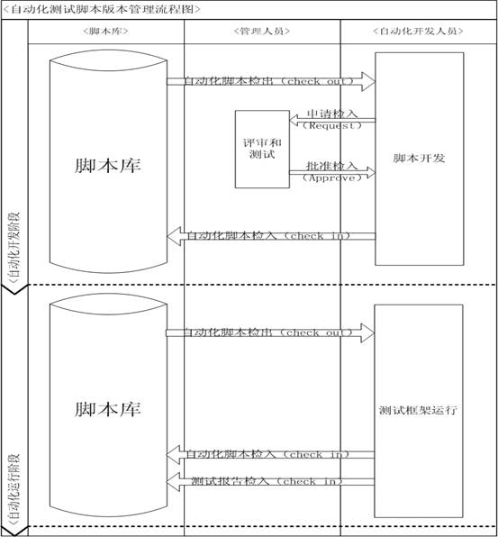

|
 |
 |
|
|
|
AC应用案例：组合job实现测试代码管理和运行1. 测试脚本代码的存储及管理
自动化测试的实施和运行的过程中，至少会产生三种工件：
- 自动化测试案例脚本
- 自动化测试公共函数库
- 自动化测试结果报告
一般来说，对于文件有两种管理策略：
- 严格的版本管理策略
比如代码管理工具clearcase，vss等，它们的特点是提供了先进的版本分支和归并功能，并且同时具有非常严格的检入/检出机制。在很多成熟软件组织的版本控制过程中，开发人员修改一个文件要经过多层流程上的审核，多次测试之后，然后才可以进行归并等操作。
因此，它的优点是保证安全性和稳定性，缺点是流程繁琐，效率不高。自动化测试工件采用代码管理工具的工作流程图如图1所示。
图1 基于严格版本管理系统的自动化测试脚本管理图
在上面的解决方案中，自动化测试脚本的版本分支与归并应该遵循其对应的被测软件产品源码的管理策略。比如1.0.1版本的软件产品代码下建立一个automation目录，专门存储自动化测试工件，这样，每当软件版本升级时，脚本也同样进行升级。
- 宽松的版本管理策略
宽松的版本管理可以由文件目录存储来实现，通过规划文件目录层次和目录名来描述文件的版本结构。如图2所示。

图2 基于目录结构的测试脚本管理方案
需要注意的是，利用windows文件系统中管理自动化测试工件，一般要符合以下两个原则：
1)一般地，目录结构的深度不超过三层，三层以上的目录会带来查阅的困难和维护工作量；
2)因为在基于目录的代码管理策略中，版本由目录来描述。升级到1.0.2版本，就需要建立一个新的目录来存放1.0.2版本的脚本集。因此，我们的原则是尽量减少版本目录中脚本的个数，以减少相应的维护工作量。2. 使用AC的观点完成测试代码存储及运行一体自动化
如果我们采用宽松的脚本代码管理策略，即脚本代码都以目录方式存放在文件服务器中，这种工作方式比较简单，暂不赘述。
下面将要考虑脚本存放在clearcase或vss等版本管理工具中，我们怎样进行测试自动化。
在AC的观点里，整个测试自动化过程分为两个部分：
- TestJob1：从版本管理系统中获得测试代码，下载到本地指定目录下，并将存储目录做为$WORKING_DIR的Output输出到框架中去。
- TestJob2：TestJob2设置dependency到TestJob1，TestJob1运行成功，TestJob2才可以运行，TestJob2的功能是从$WORKING_DIR加载测试脚本，进行测试。
假设TestJob1使用java来实现，而TestJob2是以QTP实现，我们可以在AC中定义这两个TestJob：
TestJob：
<Java name="Init_Env" description="GetTestCodeFromClearCase" depends="" > <JobInput name="$BUILD "/> <JobOutput name="$WORKING_PATH"/> <ClassPath location="testscripts/javacase/getTestCode.jar"/> <Run path="ClearCase.QTPTestCaseLoader"> </Run> </Java>这是一个java的Job，getTestCode.jar是用户自己开发的java class，通过rational CM API访问clearcase系统，获得指定版本的代码，并下载存储在本地目录，比如D:\MyTestBase\TestRun，然后将D:\MyTestBase\TestRun_1.1做为$WORKING_PATH的值输出。
<QTP name="QTPTest" description="deskTop client" factoryMode="true" depends="Init_Env"> <JobInput name="$ WORKING_PATH "/> <Lib location="$WORKING_PATH\lib\lib_util.vbs"/> <Lib location="$WORKING_PATH\lib_app\obio\lib_advancedfind_outlook.vbs"/> <TestData type="xls" location="$WORKING_PATH \data\config_data_obio.xls"/> <Case name="InstallClient" description="Install client" > <Test name="Install" description="InstallFlightClient"></Test> </Case> <Case name="bookFlight " description="bookFlight "> <Test name="Login" description="Login"></Test> <Test name="BookLondon" description="BookFlightsToLondon"></Test> </Case> </QTP>QTP的job负责加载$WORKING_PATH的脚本文件，运行相应的TestCase。
3. 例子CM API的Java Job的实现
开发java代码如下：
- Import framework jar 包；
- Class继承ACJavaJob；
- 使用getEnvProperty获得环境变量；
- 使用setOutputValue输出参数。
public class WorkFilesLoader extends ACJavaJob{ public WorkFilesLoader() { } public void Run(){ //System.out.println("in workfilesloader"); String buildVersion = getEnvProperty("BUILD"); //Call CM API to get code from clearcase based on the build Boolean success = getCodeTo ………………………………. ………………………………… //end if(success){ setOutputValue("$WORKING_PATH"," D:\MyTestBase\TestRun_1.1"); pass("all files is ready!"); }else{ Fail("failed to get work files from clearcase!"); } } }